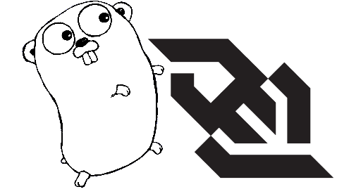

I posted a small sample of a WebSocket server written in Go on GitHub.
The sample uses JS to record some mouse events in a page and send them as JSON data over a WebSocket connection to a server written in Go, which echoes them back. The received events are used by the JS code to update the page. In addition, the server periodically sends time updates to the client over another WebSocket.
The sample demonstrates how to do several things I was curious about:
- Talking WebSockets in Go. I'm using the semi-standard x/net/websocket package for this purpose. The sample has a WebSocket server as well as a Go client for testing it.
- Serving both static pages and other HTTP traffic on the same connection.
- Using JSON for marshalling and unmarshalling of data on the Go side.
- Implementing both bi-directional WebSocket communication (client initiates, server replies) and uni-directional push notifications (server pushes to client without polling).
- Using the trace package for recording server request analytics and reporting them through HTTP.
- Writing a simple WebSocket client in JS.
The client-side is just a page of pure JS (no frameworks). I believe it should work with all modern browsers (I tried in fairly recent versions of Chrome and Firefox).
One thing I was particularly interested in is how framing (the creation of frames from a raw data stream) over WebSockets is done. I've written a bit about framing before: in serial communications (also here), and length-prefixing for protocol buffers.
WebSockets run over TCP so we don't have to worry about lower-level headaches. All bytes sent will arrive, in the right order. The WebSocket RFC defines a precise frame structure, which is usually implemented in libraries; clients only have to worry about the payloads.
For example, on the Go side this is implemented in hybi.go (look for the Write method on the hybiFrameWriter type). What the user of the library ends up getting is just a []byte interface to pass in and out of the WebSocket layer. This is abstracted with a Codec type:
type Codec struct {
Marshal func(v interface{}) (data []byte, payloadType byte, err error)
Unmarshal func(data []byte, payloadType byte, v interface{}) (err error)
}
The x/net/websocket library provides some default Codecs like Message (for []byte and string) and JSON (for JSON-encoded data), but the user can provide his own. For example, it's fairly easy to send protocol-buffer encoded data over WebSockets if you're so inclined.